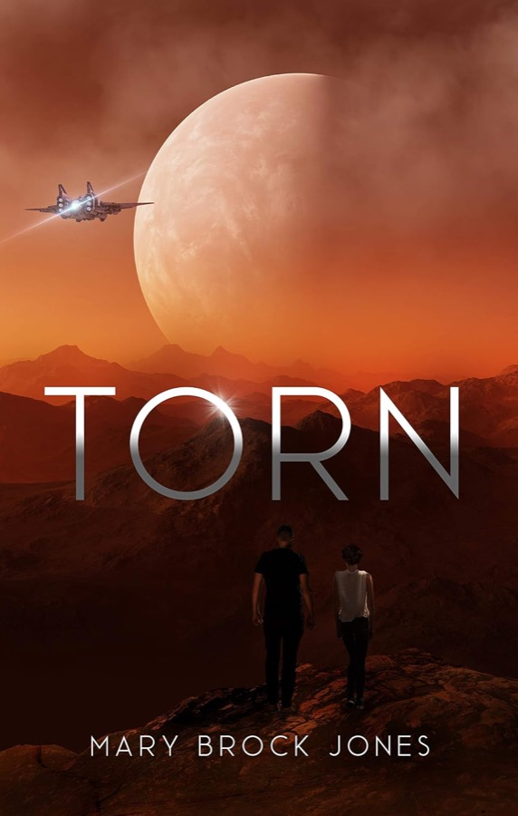
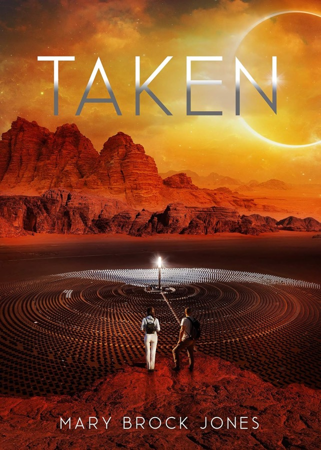

Arcadia
Space opera with a planet in trouble. Drought, storms and floods, a galactic Alliance losing patience, and two people who would rather fight each other than fix it together.

Torn
“Storms, floods, drought. Don’t bother taking your pick,” says the planet, “you’re going to get the lot.”
Caleb Winter loves his drylands home, and the desert is winning. Fee den Coille is a woman of the forest, sent to the parched plains to work with a man from a family long an enemy of hers.
Get Torn
Taken
All Ethan Winter wanted was to run his family’s solar energy business. Union organiser Sarwenna Beren is set for battle the moment he arrives in her desert town. Then a frightened boy runs off into the desert, and his flyer needs her local knowledge.
Get TakenExiled
Sentenced to exile by his home world, he’s hungry for revenge.
Seolta den Coille is banished from Arcadia. Anyara wants to be left in peace to run her space station’s biota systems, and to stay alive. They run together, across Alliance space, straight into the Alliance Council.
The Winters
Sun-baked dirt, ripe grasses, hot wind. Solar fields and the family business that runs the town.
The den Coilles
Wind and rain, storms on the mountain, the smell of mud and wet leaves. A family long an enemy of the Winters.
Before Arcadia
- Hathe
- Toil and Strife (Hathe books one and two) and Aftermath, Hathe book three. Aftermath won a 2018 SFR Galaxy Award for Potent Post-War Setting.
- Otago gold rush
- Historical romance set in the gold rushes of the South Island, where she spent her childhood: A Heart Divided and Swift Runs the Heart.
Mary Brock Jones
Lives in Auckland. Grew up partly in Otago, which is where the historical romances come from. Mother of four grown sons, office-bound by day, writing science fiction and historical romance the rest of the time. A member of SpecFicNZ and Romance Writers of Australia.
Find her
- Indie Writers FestivalTe Manawa, Massey, Auckland, 29 August 2026
- Ages of Pages book fairOne of the authors at the Waikato fair
- OnlineInstagram
Start with Torn
Book one of Arcadia, where the desert is creeping closer every day.
Get Torn